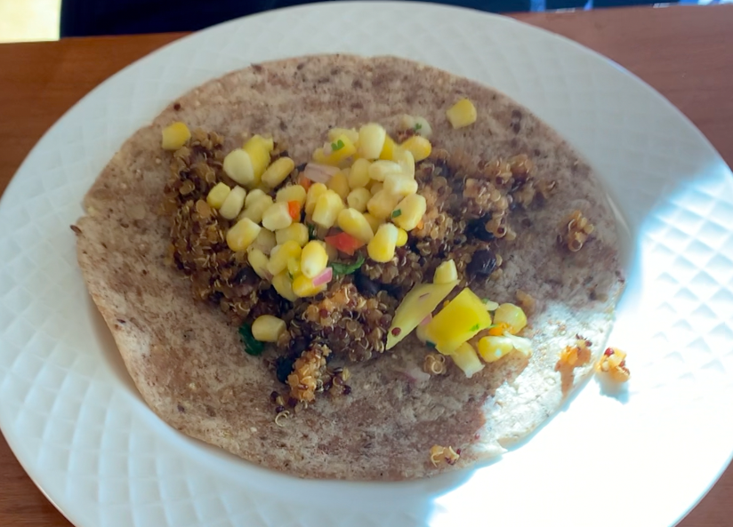

Origins: Tacos are the national dish of Mexico. Back in the 18th century, the word taco meant gunpowder that is wraped in paper. The purpose of "miner's tacos" (as it was called) was to create explsives that would help with mining. Source: https://www.tasteatlas.com/

Recipe:
In a large pot, heat olive oil over medium heat. Once hot, add the onion and cook, stirring occasionally, until mixture has softened and turns slightly golden (About 4 minutes).
Add the garlic and cook for 1 minute. Then add the spices and tomato paste to coat the onion & garlic. Cook for 2 minutes.
Add the quinoa to the pot and stir. Cook for 1 minute longer and then add the chicken stock. Salt if desired. Increase the heat to medium-high and bring quinoa to a boil.
Once boiling, add the black beans and stir. Reduce heat to low and simmer for 15 minutes.
Remove pot from heat and let sit for 5 minutes. Add the lime juice and fluff mixture with a fork. Fill tortillas with some of the quinoa and serve with toppings (Salsa).
To create the Corn-Mango Salsa, combine corn, red pepper, mango, onions, and cilantro in a bowl. Season with lime juice.